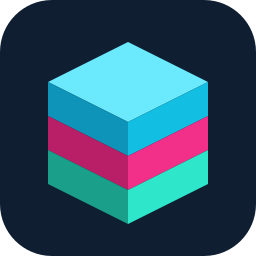
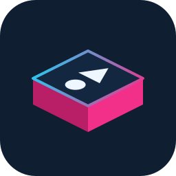
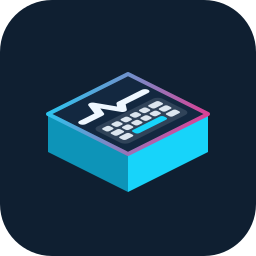
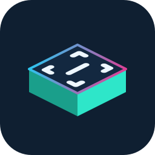
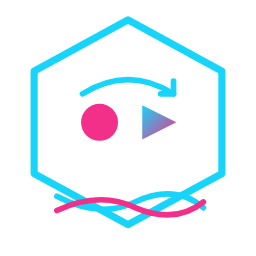
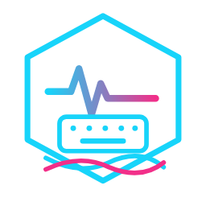
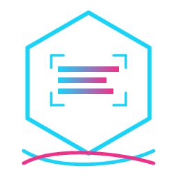

The host mark is a stack of three layers — Ro, Ro, Ro. Plugins are layers.
So each plugin icon is one isometric slice of the host cube: function glyph printed on its top face,
one family color per plugin, a cyan→magenta rim tying every slice back to the duo.
The old hexagon outline survives on its own terms — an iso slice reads as a hexagon.
The family

RoRoRo
Host · the stack

Ur Task
Magenta slice · macros

Ur AFK
Cyan slice · keep-alive

Ur OCR
Teal slice · perception
++=
Size ramp
Store tile, list row, tray. The glyphs are solid fills and fat strokes — no thin lines to vanish at 24px.
Before / after

Ur Task · current
Ur Task · proposed

Ur AFK · current
Ur AFK · proposed

Ur OCR · current
Ur OCR · proposed
Why this works. The host cube is already on the Microsoft Store — it stays, lightly retuned to the
brand tokens. The plugins stop borrowing a second visual language and start being what they are in the
product: layers that slot into the stack. Future plugins get a slice and a glyph on day one — the system
scales without a meeting. Marketplace page bonus: slices can animate into the stack.